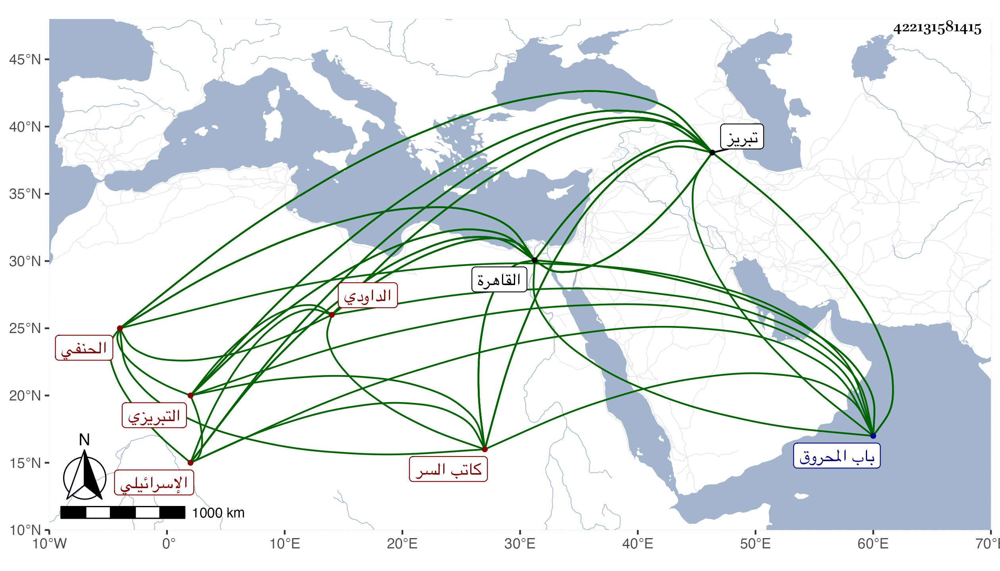

0902Sakhawi.DawLamic.ITO20230111-ara1.EIS1600.422131581415
Biography ID: 422131581415
556
فتح الله بن مستعصم بن نفيس فتح الدين الإسرائيلي الداودي التبريزي الحنفي كاتب السر . ولد بتبريز سنة تسع وخمسين وسبعمائة وقدم مع أبيه القاهرة فمات أبوه وهو صغير فكفله عمه بديع بن نفيس فقرأ المختار في الفقه وتردد إلى مجالس العلم وتعلم الخط وعرف كثيرا من الألسنة ومن الأخبار ، وتميز في الطب وباشر العلاج وصحب بيبغا الشافعي أيام الأشرف واختص به ورافقه من مماليكه الأمير الشيخ الصفوي وكان بارع الجمال فانتزعه لما قبض على الشافعي وصار من أخص المماليك عنده فزوج فتح الله أمه وفوض إليه أموره وأسكنه معه فاشتهر من ثم وشاع ذكره واستقر في رياسة الطب بعد موت عمه بديع فباشرها بعفة ونزاهة ، ثم عالج برقوق فأعجبه وراج عليه بما كان يعرفه من الألسنة والأخبار واختص به وصار له عنده مجلس لا يحضر معه فيه غيره فلما مات البدر محمود الكلستاني قرره في كتابة السر مع سعي البدر بن الدماميني فيها بمال كثير فباشر بعفة ونزاهة أيضا وقرب من الناس وبشاشة وحشمة وعمله الظاهر أحد أوصيائه واستمر في كتابة السر بعده لم ينكب إلا في كائنة ابن غراب ثم عاد ، قال شيخنا : وكانت خصاله كلها حميدة إلا البخل والحرص والشح المفرط حتى بالعارية وبسبب ذلك نكب فإن يشبك لما هرب من الوقعة التي كانت بينه وبين الناصر ترك أهله وعياله بمنزله بالقرب منه فلم يقرهم السلام ولا تفقدهم بما قيمته الدرهم الفرد فحقد عليه ذلك وكان أعظم الأسباب في تمكين ابن غراب من الحط عليه فلما كانت النكبة الشهيرة لجمال الدين كان هو القائم بأعبائها وعظم أمره عند الناصر من يومئذ وصار كل مباشر جل أو حقر لا يتصرف إلا بأمره فلما انهزم الناصر وغلب شيخ استقر به وقام بالأمر على عادته إلى أن نكب في شوال سنة خمس عشرة من المؤيد لشيء نقل عنه ولم يزل في العقوبة والحبس إلى أن مات مخنوقا في ليلة الأحد خامس ربيع الأول سنة ست عشرة وأخرج من الغد فدفن بتربة خارج باب المحروق من القاهرة . قال ابن خطيب الناصرية : وكان إنسانا عاقلا دينا محبا في أهل الخير والعلم وجمع كتبا نفيسة زاد غيره : وكانت مدة ولايته كتابة السر أربع عشرة سنة ونحو شهر تعطل فيها أشهرا وقال المقريزي : كانت له فضائل جمة غطاها شحه حتى اختلق عليه أعداؤه معايب برأه الله منها فإني صحبته مدة طويلة تزيد على عشرين سنة ورافقته سفرا وحضرا فما علمت عليه إلا خيرا ، بل كان من خير أهل زمانه رصانة عقل وديانة وحسن عبادة وتأله ونسك ومحبة للسنة وأهلها وانقياد إلى الحق مع حسن سفارة بين الناس وبين السلطان والصبر على الأذى وكثرة الاحتمال والتؤدة وجودة الحافظة وكان يعاب بالشح بجاهه كما يعاب بالشح بماله فإنه كان يخذل صديقه أحوج ما يكون إليه وقد جوزي بذلك فإنه لما نكب هذه المرة تخلى عنه كل أحد حتى عن الزيارة فلم يجد معينا ولا مغيثا فلا قوة إلا بالله ، وقال : فتح الدين هذا كان جده يهوديا من أولاد نبي الله داود عليه السلام وقدم جده من تبريز أيام الناصر حسن إلى القاهرة واختص بالأمير شيخو وطبه وصار يركب بغلة بخف ومهماز ثم إنه أسلم على يد الناصر حسن وولد فتح الله بتبريز وقدم على جده نفيس فكفله عمه بديع لأن أباه مات وهو طفل ، ونشأ معتنيا بالطب إلى أن ولي الرياسة بعد موت العلاء بن صغير ، واختص بالظاهر حتى ولاه كتابة السر بعد ما سئل فيها بقنطار من الذهب مع علمه ببعده عن صناعة الإنشاء وقال : أنا أعلمه فباشر ذلك وشكره الناس ، وطول في عقوده ترجمته .
